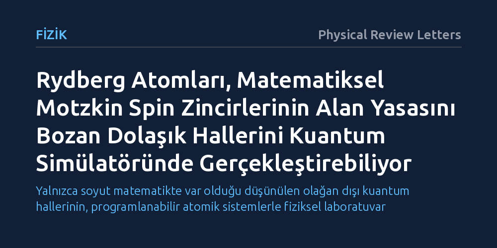

FIZIK · Physical Review Letters · 2026-10-13
Araştırmacılar, klasik bilgisayarlarla simüle edilmesi neredeyse imkânsız olan yüksek derecede dolaşık Motzkin spin zincirlerinin laboratuvarda nasıl üretilebileceğini araştırdı. Aşırı soğuk Rydberg atomlarına dayalı bir kuantum simülasyon şeması önererek, bu durumların alan yasasını bozan dolaşıklık özelliklerinin deneysel parametrelerle başarıyla taklit edilebileceğini gösterdiler.
Yalnızca soyut matematikte var olduğu düşünülen olağan dışı kuantum hallerinin, programlanabilir atomik sistemlerle fiziksel laboratuvar ortamında somut olarak incelenebileceğini kanıtlıyor.

Kuantum fiziğinde birçok parçacığın birbirine görünmez bağlarla kenetlendiği dolaşık durumlar, modern bilimin en çok merak edilen araştırma konuları arasında yer alır. Standart fiziksel sistemlerde parçacıklar arasındaki kuantum dolaşıklığı genellikle "alan yasası" denen temel bir kurala uyar. Bu kurala göre sistemin bir parçasının çevresiyle paylaştığı kuantum bilgisi, o parçanın hacmiyle değil yalnızca yüzey alanıyla orantılı kalır. Ancak kuramsal fizikte geliştirilen "Motzkin spin zinciri" gibi özel matematiksel modellerde durum bambaşkadır; bu sistemlerde dolaşıklık yüzey sınırını aşarak hacimsel bir artış sergiler ve parçacıklar arasında olağanüstü derin bir kuantum bağı örülür.
Bu aşırı dolaşıklık hali, Motzkin modelini hem topolojik kuantum fazları hem de yerçekimi ile kuantum fiziğini bağdaştırmaya çalışan kuramsal yaklaşımlar için çok değerli bir araştırma alanı haline getirir. Ne var ki madalyonun diğer yüzü büyük bir hesaplama krizidir: Bu durumların barındırdığı yüksek boyutlu spin yapısı nedeniyle sistemdeki parçacık sayısı biraz arttığında, dünyanın en güçlü süper bilgisayarları bile temel durumu simüle edemez hale gelir. Bilim insanlarının önündeki temel soru şudur: Klasik bilgisayarların hesaplama kapasitesini aşan bu soyut matematiksel durumlar, doğrudan kuantum kurallarıyla çalışan fiziksel bir laboratuvar ortamında canlandırılabilir mi?
Araştırmacılar bu soruyu çözmek için klasik hesaplamalar yerine kuantum simülasyonu yaklaşımını benimsediler. Kuantum simülasyonunda temel amaç, incelenmesi veya hesaplanması son derece güç olan bir kuantum sistemini, laboratuvarda hassas biçimde denetlenebilen başka bir kuantum sistemiyle taklit etmektir. Ekip bu doğrultuda, son yıllarda atom fiziğinde öne çıkan aşırı soğuk Rydberg atomlarını temel alan bir simülasyon şeması geliştirdi. Rydberg atomları, lazerler vasıtasıyla en dış elektronları çekirdekten çok uzak enerji seviyelerine uyarılmış, devasa boyutlara ulaşan ve birbirleriyle mikrometre mesafelerinde dahi güçlü dipol etkileşimine girebilen özel atomlardır.
Araştırma ekibi, lazer tuzaklarında tutulan bu atomların deneysel olarak erişilebilir etkileşim parametrelerini kullanarak Motzkin spinlerini modelleyen bir düzenek kurguladı. Atomların birbirine uyguladığı kuantum engelleme ve etkileşim mekanizmaları, Motzkin spin kurallarını fiziksel olarak gerçekleştirecek biçimde tasarlandı. Ardından, önerilen bu simülasyon şemasının ortaya çıkardığı etkin temel durumun matematiksel özellikleri, analitik ve sayısal yöntemlerle kapsamlı biçimde test edildi.
Elde edilen sonuçlar, önerilen Rydberg simülasyon şemasının Motzkin spin zincirini yüksek bir doğrulukla yeniden üretebildiğini gösterdi. Ortaya çıkan etkin temel durum, ideal Motzkin modelinin en belirleyici imzası olan ve standart alan yasasını ihlal eden kuantum dolaşıklık ölçeklemesini başarıyla sergiledi. Başka bir deyişle, sistem boyutu büyüdükçe parçacıklar arasındaki kuantum bağı tam olarak matematiksel modelin öngördüğü şekilde derinleşti.
Ayrıca sistemin parçalarını betimleyen indirgenmiş yoğunluk matrisinin blok yapısının da ideal Motzkin durumuyla tam bir uyum içinde olduğu doğrulandı. Bu bulgular, bugüne kadar yalnızca tahta üzerinde bir matematik kurgusu olarak kalan Motzkin spinlerinin, mevcut laboratuvar teknolojileri ve programlanabilir Rydberg simülatörleri kullanılarak fiziksel bir kuantum varlığına dönüştürülebileceğini kanıtladı.
Bu çalışma, Motzkin zincirlerinin salt bir matematiksel merak konusu olmaktan çıkıp deneysel olarak gözlemlenebilir bir gerçekliğe taşınabileceğini gösteriyor. Klasik bilgisayarların yetersiz kaldığı yüksek boyutlu spin sistemlerinde, soğuk atom tabanlı kuantum simülatörlerinin deneysel bir keşif aracı olarak ne denli güçlü olduğu bir kez daha somutlaştı.
Sonuçlar aynı zamanda alan yasasını çiğneyen diğer egzotik kuantum fazlarının ve simetri korumalı topolojik durumların incelenmesi için yeni bir araştırma kapısı aralıyor. Önerilen şema laboratuvarda hayata geçirildiğinde, hem yeni nesil kuantum malzemelerin mikroskobik dinamiklerini hem de gelecekteki kuantum teknolojilerinde hata korumalı yapıların temelini oluşturabilecek dolaşıklık mekanizmalarını doğrudan gözlemleme imkânı doğacak.